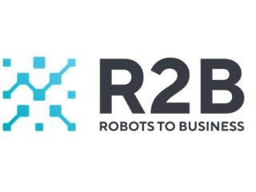

R2B storiesУсловия уточняются · Связь не уточнена
https://t.me/rbc_news/157800

CleanExpo Moscow 2026 · Россия · Зал №3 · Стенд A331
Павильон №1
Дата среза карточки: 16.11.2026 11:14
Посмотреть официальную схему →
R2B; MARK 2SE
Регион: Ярославль · Адрес: Россия, Ярославль, ул. Полушкина Роща, 1, территория завода «Корд»
https://t.me/rbc_news/157800
https://t.me/bas_centr/938
Блогер @raddyshilov 450К подписчиков отметил нашего робота Mark 2 SE в аэропорту Красноярска.
Поломои против пухососов, лужеловов, ПИВОВОЗОВ и шашлыкометов. Какие роботы реально работают, пока все ищут ненастоящих https://r2b.company/polomoi-vs-puhososy
Первый Mark 2 SE от R2B на Дальнем Востоке. https://r2b.company/robot-uborshik-aeroport-yuzhno-sahalinsk
ФЦ БАС совместно с Департаментом торговли и услуг Москвы запустил пилотный проект по внедрению автономных роботов-уборщиков в торговых центрах. В проект уже вошли 26 торговых центров общей площадью более 1,1 млн кв . м, при этом каждую неделю количество ТЦ увеличивается . В тестировании участвуют…
Новая точка на карте. И это Южно-Сахалинск. Рады мы, рады люди в комментариях). https://clck.ru/3T9siN
Кейс внедрения в Красноярском техникуме сварочных технологий и энергетики. https://r2b.company/krasnoyarsk-tekhnikum-svarochnykh-tekhnologiy-i-energetiki
Робот-уборщик Mark 2 SE в ТРЦ Аура, Ярославль. https://r2b.company/cases/aura
🔔 Приглашаем партнёров на экскурсию по производству роботов-уборщиков в Ярославле. ✔️ Формат мероприятия: экскурсия по производству компании R2B + деловая часть + вопросы напрямую инженерам и производителю. Кому подойдёт: руководителям и собственникам клининговых компаний, специалистам управляющих компаний, технологам и представителям клининговой отрасли, которые планируют пилотный…
Источники: